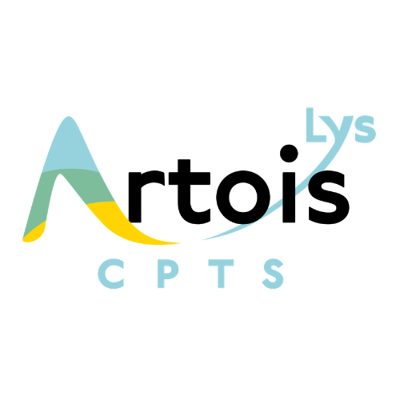

Vision
Préserver la vue et repérer les difficultés visuelles.

CPTS Artois LysRessources pour les adhérentsPRÉVENTION · COORDINATION · AUTONOMIE
Le programme ICOPE et les nouvelles possibilités de prescription des kinésithérapeutes : des repères pour agir au quotidien, avec les adhérents de la CPTS Artois Lys.
Repères actualisés au 7 octobre 2026
01 / COMPRENDRE
Développé par l’Organisation mondiale de la santé, ICOPE vise à préserver les capacités et l’autonomie. Il s’adresse ici aux seniors autonomes, à domicile ou au cabinet.
Le premier repérage peut être réalisé par un professionnel de santé formé : médecin, infirmier, kinésithérapeute, pharmacien, diététicien, psychologue… Il peut être effectué sur papier ou avec ICOPE Monitor. L’auto-évaluation peut ensuite soutenir le suivi, avec un accompagnement professionnel en cas d’alerte.
Préserver la vue et repérer les difficultés visuelles.
Repérer les difficultés à entendre et à communiquer.
Suivre la mémoire et l’orientation.
Préserver les déplacements et les capacités physiques.
Être attentif à l’humeur et à la perte d’intérêt.
Surveiller l’appétit et les variations de poids.
Pour approfondir : présentation ICOPE · les trois nouveaux facteurs clés.
02 / AGIR EN ÉQUIPE
Présenter le programme, recueillir l’accord de la personne et réaliser l’étape 1 avec les outils officiels. Identifier le professionnel qui assurera le suivi.
En cas d’alerte, vérifier les résultats et leur impact clinique. Une évaluation approfondie des domaines concernés peut être proposée : c’est l’étape 2.
Construire un plan personnalisé avec la personne et les professionnels concernés, en lien avec le médecin traitant. C’est l’étape 3.
Programmer les prochains repérages, généralement tous les six mois, et suivre les actions engagées dans le dossier ICOPE Monitor.
Le protocole transmis en juin 2026 prévoit trois temps : vérifier la véracité de l’alerte, apprécier son impact clinique, puis orienter la personne. Le suivi en auto-évaluation nécessite aussi cette vérification. Tracer la réponse et transmettre les informations utiles au médecin traitant par un canal sécurisé.
Ce protocole décrit notamment une organisation en Occitanie. Pour l’Artois Lys, les interlocuteurs, responsabilités et modalités d’orientation sont à préciser avec la CPTS.
ICOPE Monitor permet le repérage sur smartphone ou sur le web. Le Dossier informatisé ICOPE Monitor (DIIM) permet de consulter les résultats, l’évolution et les alertes, avec les mêmes identifiants.
Pour un dépistage d’essai, renseigner « Test » dans le nom et le prénom, selon les consignes transmises par l’équipe ICOPE.
Le kiné peut contribuer au repérage, à l’évaluation de la mobilité, à la prévention des chutes et à la rééducation selon les besoins identifiés. Il participe à la coordination avec le médecin traitant et les autres professionnels.
Des ateliers associant activité physique, nutrition et soutien psychologique peuvent compléter le parcours. Leur organisation et leur financement sont à construire localement.
Voir la présentation des ateliers multidomaines ↗03 / ÉVOLUTIONS PROFESSIONNELLES
La CPTS Artois Lys met à votre disposition une annexe illustrée présentant la liste issue de l’arrêté du 14 septembre 2026, publié au Journal officiel le 16 septembre.
Le texte élargit les produits de santé prescriptibles. Les exemples suivants sont particulièrement utiles pour lire ces évolutions sous l’angle du maintien de l’autonomie.
Aides à la marche, matériels de transfert, lit médicalisé à la location, prévention des escarres ; fauteuils roulants pour une location inférieure à trois mois.
Orthèses, chaussage thérapeutique, dispositifs respiratoires et d’électrostimulation : vérifier les modalités propres à chaque produit dans la liste officielle.
Dispositifs de rééducation périnéo-sphinctérienne, sondes, pessaires et collecteurs urinaires figurent dans la liste.
Notamment antalgiques de palier 1 et myorelaxants hors injectables, mucolytiques, antiseptiques locaux hors produits iodés et substituts nicotiniques.
Prescription pour les patients pris en charge, dans le champ des compétences du kiné, sauf indication contraire du médecin et à l’exclusion des produits utilisés pendant la séance. Respecter les conditions propres à chaque produit.
La possibilité de prescrire ne garantit pas le remboursement : vérifier les règles de prise en charge applicables.
Liste et conditions de prescription vérifiées dans le texte réglementaire.
Depuis le 1er octobre 2026, les masseurs-kinésithérapeutes peuvent réaliser Mon bilan prévention. Ce dispositif comprend des entretiens aux âges clés de la vie et un plan personnalisé de prévention. Il est distinct du repérage ICOPE, même si les démarches peuvent se compléter.
Consulter les modalités sur ameli.fr ↗Le kinésithérapeute peut, avec l’accord du patient et sauf indication contraire du médecin, renouveler une fois ou adapter une prescription médicale initiale d’APA, sous les conditions prévues par l’article D. 1172-2-1. Utiliser le formulaire réglementaire et informer le médecin prescripteur de manière confidentielle.
Consulter le cadre réglementaire de l’APA ↗04 / SE FORMER & S’OUTILLER
La formation transmise aux professionnels comprend le dépistage et la gestion des alertes.
Environ 1 h 30 maximum*
Accéder aux formations ↗Approfondir les domaines altérés et préparer une orientation adaptée avec les professionnels concernés.
Environ 6 heures*
Consulter le parcours étape 2 ↗* Durées indicatives annoncées dans le message de formation transmis ; vérifier les modalités actuelles sur la plateforme.
Les liens vidéo et le dossier partagé sont ceux transmis par l’équipe ICOPE. Les questionnaires et guides officiels sont à récupérer auprès de cette équipe ou via ses ressources.
PASSER À L’ACTION EN ARTOIS LYS
Contactez la CPTS pour les ressources de formation, la coordination locale et les possibilités de participation aux actions de prévention.